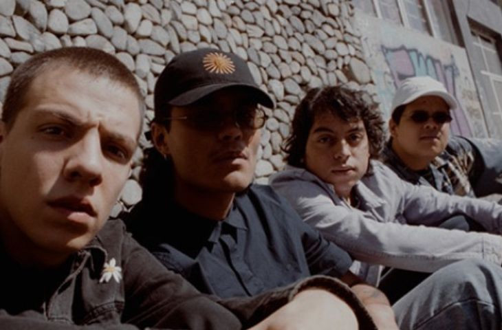
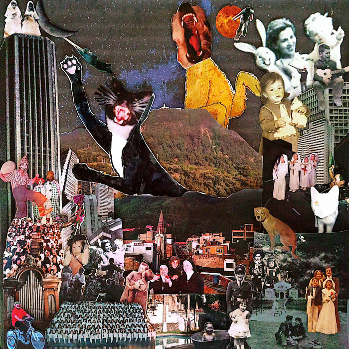
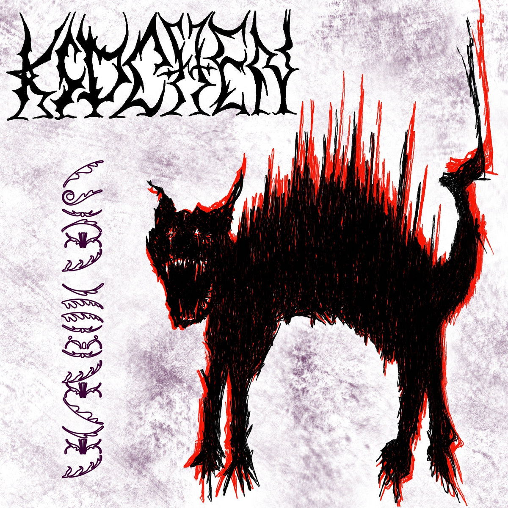

Cartas de Bandas

Margarita Siempre Viva
Indie emocional y nostálgico.

Ortiga
Rock alternativo con vibra urbana.

Kidchen
Indie fresco con identidad joven.

Olga Lucía, no me vayas a dejar
Sonido alternativo con sensibilidad artística.